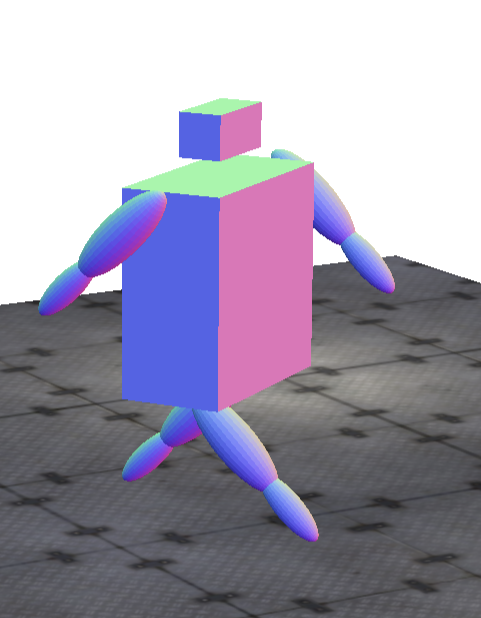
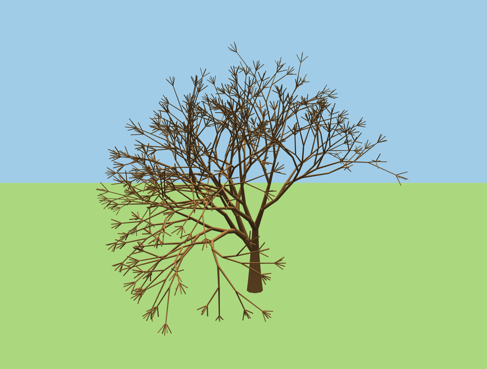

Graphics
Je me suis fortement intéressé à l'infographie depuis que j'ai commencé mon master dans ce domaine cette année. Bien que ce domaine soit encore en grande partie nouveau pour moi, je suis très motivé par le processus d'apprentissage et profondément curieux des aspects mathématiques, techniques et créatifs de l'infographie. Grâce à des cours universitaires et à des projets personnels, j'ai exploré un large éventail de techniques liées à l'animation par ordinateur, au rendu en temps réel et à l'informatique visuelle.
I have developed a strong interest in computer graphics since starting my master’s degree in this field this year. Although much of this domain is still new to me, I am highly motivated by the learning process and deeply curious about the mathematical, technical, and creative aspects of graphics. Through academic coursework and personal projects, I have explored a wide range of techniques related to computer animation, real-time rendering, and visual computing.
Computer Animation - École Polytechnique
Au cours de ma formation en animation par ordinateur à l'École Polytechnique, j'ai réalisé environ neuf mini-projets couvrant un large éventail de concepts d'animation et de graphisme.
- Animation cinématique et procédurale
- Rigging de personnages et modélisation hiérarchique
- Systèmes de particules
- Corps déformables
- Corps rigides et gestion des collisions
- Simulation de fluides
During my Computer Animation course at École Polytechnique, I completed approximately nine mini-projects covering a wide range of animation and graphics concepts.
- Kinematic and procedural animation
- Character rigging and hierarchical modeling
- Particle systems
- Deformable bodies
- Rigid bodies and collision handling
- Fluid simulation
Fundamentals of Computer Graphics
Dans le cadre du cours « Fondamentaux de l'infographie », j'ai mis en œuvre plusieurs techniques de rendu de base à partir de zéro.
- Shadow Mapping — rendu des ombres basé sur la profondeur
- Loop Subdivision — raffinement des maillages et lissage des surfaces
As part of the Fundamentals of Computer Graphics course, I implemented several core rendering techniques from scratch.
- Shadow Mapping — depth-based shadow rendering
- Loop Subdivision — mesh refinement and surface smoothing
3D Modeling & Animation
J'ai travaillé sur plusieurs projets de modélisation et d'animation 3D combinant modélisation mathématique et rendu en temps réel.
- Simulation 3D du système solaire avec transformations hiérarchiques
- Modélisation de robots et animation articulée à l'aide de Three.js
I worked on several 3D modeling and animation projects combining mathematical modeling and real-time rendering.
- 3D Solar System simulation with hierarchical transformations
- Robot modeling and articulated animation using Three.js

Threejs Robot
Threejs TreeReal-Time Graphics — Unity
J'ai exploré les graphismes interactifs en temps réel à l'aide de Unity à travers des prototypes de jeux classiques et des expériences immersives en réalité virtuelle.
- Prototype Roll-a-Ball (physique, contrôle du joueur, logique du jeu)
- Intégration de Unity avec un casque VR Meta Quest (en cours d'apprentissage)
I explored real-time interactive graphics using Unity through both classic gameplay prototypes and immersive virtual reality experiments.
- Roll-a-Ball prototype (physics, player control, game logic)
- Integration of Unity with a Meta Quest VR headset (currently learning)
WebGPU (In Progress)
Je travaille actuellement sur des projets WebGPU afin de mieux comprendre les API GPU modernes et le rendu en temps réel sur le Web.
I am currently working on a WebGPU projects to better understand modern GPU APIs and real-time rendering on the web.
View DemoComputer Vision Research - OpenCV (In Progress)
Parallèlement à mon travail dans le domaine graphique, je participe à un projet de recherche axé sur la vision par ordinateur à l'aide d'OpenCV.
In parallel with my graphics work, I am involved in a research-oriented project focused on computer vision using OpenCV.